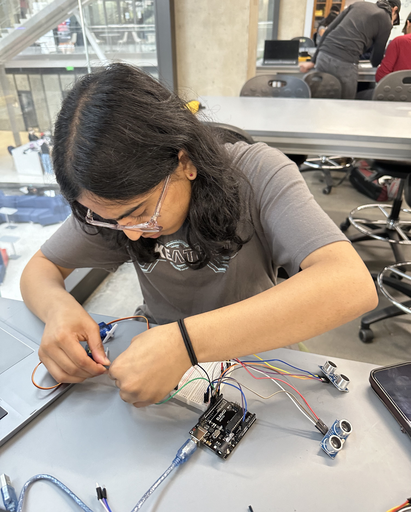
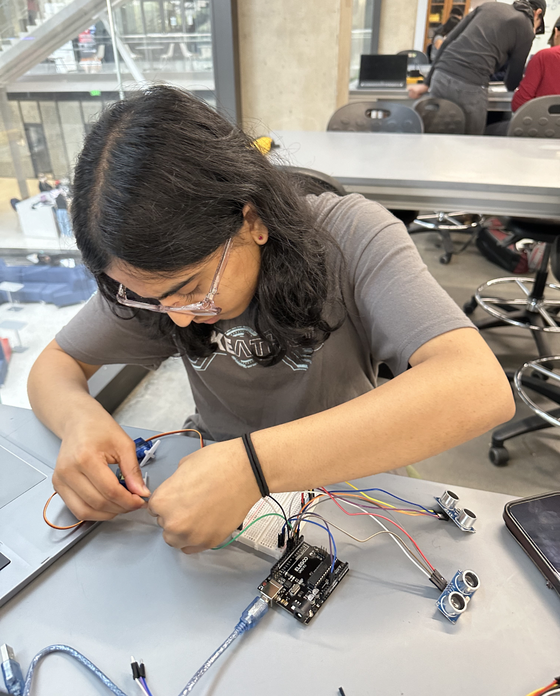

Sonic Vision: A Head-mounted Depth Perception Device
This project is a tool for visually impaired users to percieve depths in short ranges using haptic feedback from servo motors. I worked on this project as a team of 3 engineers as part of the Cockrell School Design Makeathon. This project was took us around 2 days to complete (October 2023). This project was selected as a finallist by the Makeathon panel.
Key Features
- Low-cost head-mounted device that provides haptic feedback to blind users
- Control algorithm + time delays to synchronize array of ultrasonic sensors
- Cross-sensor minimization subroutines
Tech Stack
- Programming: C#
- Hardware: Arduino Uno Microcontroller
- Environment: Arduino IDE
Major Challenges & Key Takeaways
- Cross-Sensor Interference: We collected data from 3 ultrasonic sensors in an array. The close proximity of these sensors resulted in noisy data which we resolved by adding time delays and storing intermediate results in a buffer. We implemented algorithms to smooth the data using median filtering and omitting outliers.
- Key Takeaways + Skils:
- Interfacing sensors
- Smoothing data using software algorithms
 

Demos
Demo
November 12,2025: A demo of Sonic Vision. As an object moves clsoer to the device, the servo motors oscilaltes with an increased frequency which we programmed using a mapping control function.